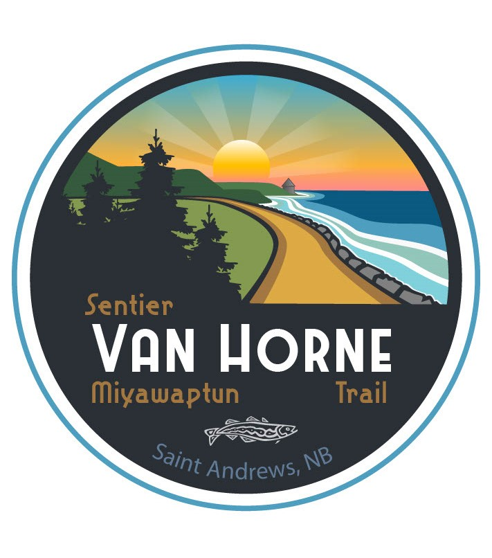

Hints
About
Home
Van Horne Trail
dehaze

Map legend
Click to view site information
Paved section
Connectors
Historic Water street
Other routes and trails
Join us on
Facebook
for recent photos and commentary.